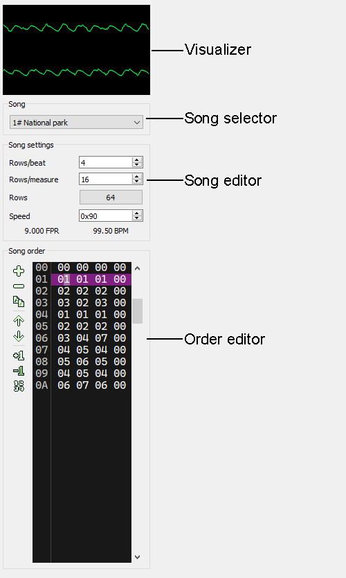

The Sidebar
The sidebar is located to the left of the Pattern editor and contains controls for the current song.

Visualizer
The visualizer is an oscilloscope for the left and right channels. The top scope is the left channel and the bottom is the right. You can change the colors in the Appearance config.
Song selector
Use this combo box to change the current song to edit/play. New songs can be added from the Module properties dialog.
Song editor
This section has controls for changing the song's settings.
- Rows/beat - This setting determines the number of rows that make up a beat. It used for tempo calculation and for highlighting rows in the pattern editor. The default value for new songs is 4.
- Rows/measure - This setting determines how many rows make up a measure. This setting should be a multiple of the Rows/beat setting but this is not required. This setting is only used for highlighting rows in the pattern editor. The default value is 16.
- Rows - This is the number of rows each track contains. Click the button to change the setting. Note that setting a smaller size will truncate all tracks in the song and cannot be undone. The default setting is 64 rows.
- Speed - Initial speed setting when playing the song. Note that the value is in hexadecimal. See Speed for more details. The default speed setting is 0x60.
Order editor
The order editor is where you edit the song's order. The song order is a list of orders, which is a set of track ids (one for each channel). You can reuse existing tracks across orders. Each song can have a maximum of 256 orders, and must have at least 1 order.
To edit the order, move the cursor via the mouse or keyboard and edit the track id via the keyboard.
Change all
If this is checked, all track ids in the order will be edited via the keyboard or increment/decrement actions.